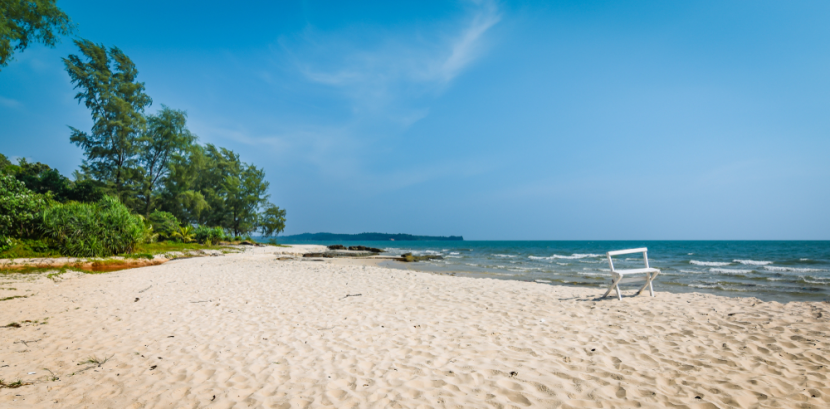
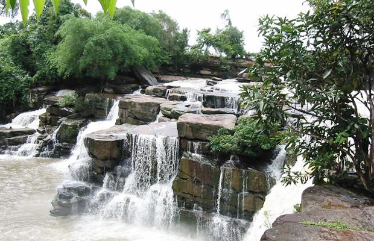
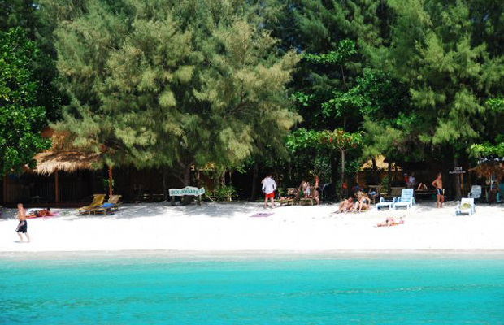
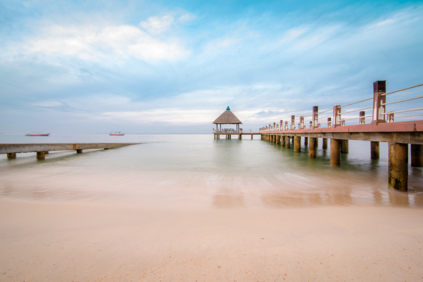

he official name of the city in Khmer is: krong ('city'), preah ('holy') Sihanouk (name of the former king), which adds up to: 'City of the holy Sihanouk' or 'Honorable Sihanouk City'. King Norodom Sihanouk (reigned 1941–1955, 1993-2004) was and still is revered as father of the (modern) nation.[20] The name Sihanouk is derived from Sanskrit through two Pali words: siha ('lion'), and hanu ('jaws').The alternative name, Kompong Saom (also romanized as Kompong Som and Kampong Som), (Khmer: កំពង់សោម) means 'Port of the Moon' or 'Shiva's Port'. Saom is derived from the Sanskrit word saumya, the original (Rig Vedic) meaning of which was Soma, the 'juice or sacrifice of the moon-god', but evolved into Pali 'moon', 'moonlike' 'name of Shiva'. The word kampong or kompong is of Malay origin and means 'village' or 'hamlet'. Its meaning underwent extension towards 'pier' or river 'landing bridge'.
Sihanoukville, Cambodia has quickly emerged as one of the main tourist attractions in the world, thanks to its stunning sandy beaches, natural tropical islands, and electrifying nightlife. Hundreds and thousands of backpackers from all parts of the world come here to enjoy the world famous Sihanoukville nightlife and party in the many upbeat Sihanoukville bars and night clubs.Sihanoukville nightlife is centered on and around the main Serendipity beach road and on the famous Ochheuteal and victory beach; however, if you are looking for upscale nightlife you can always visit the downtown area to find disco bars, night clubs, casinos, and much more. You can start your night with a refreshing seafood BBQ platter which is served at various seafood huts and mobile carts scattered all over the city particularly along the beaches. This will give you enough energy boost to participate actively in various night time activities. Do not worry about the beer, almost all the pubs, Sihanoukville bars, and night clubs scattered along the beaches offer happy hours, you can drink as many beers as you want at very discounted price.
For party animals there is no shortage of disco clubs, pubs, and other entertainment in Sihanoukville, you only need to have a few dollars in your pocket to enjoy the lively night in this beautiful beach resort. If you are looking for a romantic spot to spend the night with your loving partner, or if you are in search of a good company, there are many spots where you can go and have fun. As soon as you cross Serendipity Pier, you will be able to find several beautiful and hidden Sihanoukville bars. These hidden bars are reserved only for the couples who want to listen to the sound of the waves and watch the fishing boats leaving the mainland. Do not try to go too far from the main island in search of a lonely place during the late hours, especially if you already had your dose of the beer.As compared to the other cities in Cambodia, Sihanoukville is a relatively small town, but this does not in any way mean that there are limited opportunities to enjoy the night of your life. There are plenty of Sihanoukville bars, casinos, pubs, night clubs, and hotels owned and managed by expats who have now become part of the Sihanoukville party culture. You will feel at home in some of these bars, and clubs. The good thing about Sihanoukville bars is that they are usually lined up at one place, so you can just leave one club and enter the next one to check what's buzzing. You do not have to rent a taxi or Tuk-Tuk to go from one bar to another. This makes Sihanoukville nightlife easy to enjoy, you get to taste the atmosphere and check the crowds without wasting a lot of your energy and money. You will surely find things of your interest in one of these lined up bars, pubs, and nightclubs.
Ochheuteal Beach, known as UNTAC Beach in the early 1990s and it is now the most popular in Sihanoukville, offering the full spectrum of beach venues from upscale hotels and dining to laid-back budget beach bars and bungalows. It may be difficult to pronounce, but the name certainly hasn't put people off the longest and most popular beach in Sihanoukville. Many actually know Ochheuteal beach as Serendipity, which actually refers to the western patch of sand.Much of Occheuteal is dedicated to food stalls and small bamboo bars, but the southern stretch is largely deserted, save for a development project, including a golf course, which has seemingly been under construction forever. Ochheuteal is long, sandy and narrow, with 'Serendipity Beach' at the northern end, a golf-course development at the southern end, and a cluster of mid-range hotels and restaurants near the MP base in the middle. Grass umbrellas, rentable beach chairs and little drink huts line the beach from one end to the other.
Kbal Chhay waterfall, Preah Sihanouk is located in Khan Prey Nup, about 16 kilometers north of the downtown Sihanoukville. To reach the site from Sihanoukville, take National Road 4 toward Phnom Penh. About 7 kilometers out side of town, there is a sign announcing the site. Turn left and go 9 kilometers along a trail. The water at Kbal Chhay comes from many sources along the mountain range, although only three of these sources are visible. The waterfall, which is 14 meters high, is at the point where those three sources joint. Kbal Chhay was discovered in 1960. Three years later, it was developed into a reservoir to supply clean water to the city of Sihanoukville. The reservoir construction, however, was interrupted due to civil war, and the site became a hide-out for the Khmer Rouge. In 1997, Kbal Chhay was marked for development, and a year later Kok An Company was awarded a contract to construct a road and develop the site for tourism. Sihanoukville in Cambodia stands distinctly as one of the yet unexplored beach destinations in Asia. It holds the inspiring history of once ravaged by the political upheaval and bouncing back to life and fervor to become ?Asia?s next trendsetting beach? destination (as per the reputed New York Times). Sihanoukville formerly known as Kompong Som offers fabulous Sihanoukville Tourist Attractions that are sure to leave you simply flabbergasted. One of the must visit tourist attractions in Sihanoukville is Kbal Chhay Waterfalls in Sihanoukville which is known for its fascinating natural beauty.
The untouched beach of Ream is located in the Ream National Park. Take Route 4 to the Airport road 18km north of town. Turn right, go 9km to the ocean. The beach to the right is long and narrow and frequented more by fishermen than tourists. Behind the beach is a mangrove swamp, which attracts a wide variety of tropical birds. The beaches to the left nearer the Naval Base now have a few vendors selling drinks and renting tubes. There is a small $5 per night guesthouse run by the National Park. Check at the park HQ opposite the entrance to the airport.The Ream Beach in Sihanoukville is the perfect place that takes you away from the crowded life of the town. Located on the outskirts it is almost a haven for nature lovers. It brings to you the best of creation and will surely captivate you to come back to it again and again. Located at the farthest end of the town, you have to travel almost 20 Km before you reach the Ream Beach of Sihanoukville. Nevertheless this distance will seem nothing when you spend those priceless moments in a place which is nothing short of a paradise. The Ream Beach in Sihanoukville is not even difficult to reach because the road is pretty straight without much turns or twists. From the airport if you travel along the route 4 towards the northern part of Sihanoukville, you will come quite near this exotic water body. You will also get several public transports to ferry you to your destination. The Ream Beach in Sihanoukville is a place that will bring you right in the middle of the untouched exquisiteness of nature. Being one of the brightest spots within the premises of the Ream National Park in Sihanoukville, it is usually haunted by the nature lovers. Though the area of the Ream Beach at Sihanoukville is not very large, it is truly one of the most charming among all the beaches in Sihanoukville.
Independence Beach, Sihanoukville gets its name from the deserted hulk of the 7 -storey Independence Hotel at the north end. Locals call this beach 'otel bram-pil chann (hotel 7-stories). It is labeled '7-Chann Beach' on the in-town street sign. Independence is more than a kilometer long, but the sandy area is much narrower making the beach best when the tide is low. The beach is wider and more tourists toward the northwest end near a small fresh water lake (which is the source of the town's fresh water and is rumored to contain crocodiles). At the other end is the beach's only hotel, Sea Breeze. Grass umbrellas and drink vendors only hotel, Sea Breeze. Grass umbrellas and drink vendors now line the beach from end to end but it is still much less frequented than other beaches. The road up to the old Independence Hotel is often frequented by a small troop of Rhesus monkeys but is currently closed while the hotel is undergoing renovation.The pretty Independence Beach is so named for the seven-storey Independence Hotel that sits atop the headland Locals refer to the hotel as the 7-storey hotel -- while street signs refer to the beach as "7-Chann Beach" -- we'll stick with Independence Beach.
Song Saa Island is as seductive as the name implies. Think intimate. Think luxurious. But above all think harmony – with all the elements of nature that make this place so special.The resort spans the islands of Koh Ouen and Koh Bong, connected by a footbridge over a marine reserve we have established to safeguard the islands’ reefs and marine life including turtles, seahorses and exotic species of tropical fish.It features luxury Over-Water, Jungle and Ocean-View villas built with sustainable materials and with the deepest respect for the natural environment.At the resort’s heart is a world-class restaurant and lounge, spectacularly positioned just off the island’s shoreline and surrounded by sea. A short stroll on the boardwalk will leave you perfectly positioned to take in dramatic sunsets, seascapes and starry nights.From the moment you set foot on Song Saa’s exquisite islands, we hope you won’t have a care in the world. For this reason, we provide a simple Always-Included pricing policy: one price, per villa, per night. The only exceptions to this are motorised water activities, some adventure and conservation experiences as well as treatments at the resort’s sanctuaries.